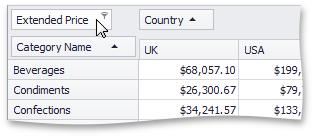
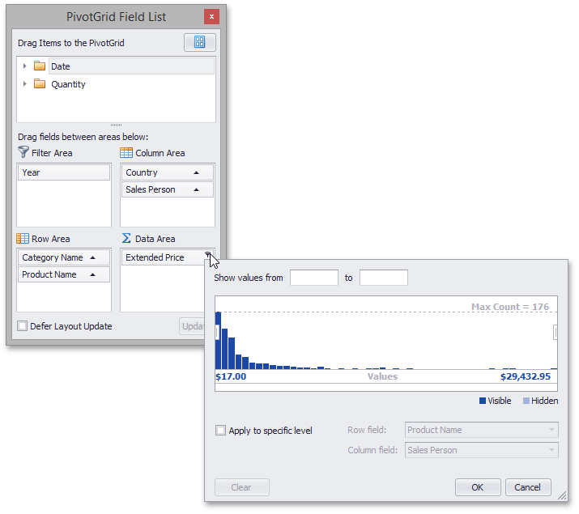

Invoke a Summary Filter Window
To enable and configure filtering by cell values, use the Summary Filter Window.
You can invoke a Summary Filter Window from the Pivot Table or from a Field List (to learn about Field Lists, see Field List Overview).
Invoke a Summary Filter Window from the Pivot Table
Field headers located in the Data Area display special buttons used to invoke a Summary Filter Window. Follow the steps below.
Hover over the header of a field whose data you need to filter. A filter button (
 ) will be highlighted.
) will be highlighted.
Click this filter button to display a Summary Filter Window.

Invoke a Summary Filter Window from a Field List
You can use an advanced Field List to filter field values.

First, invoke a Field List. For information on how to do this, see Invoke a Field List.
To open a Summary Filter Window, click the filter button displayed in the field header.
